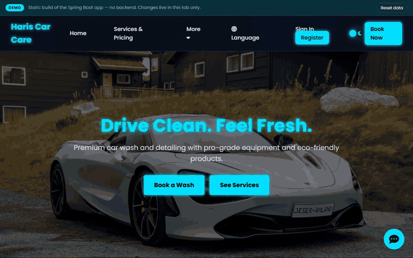

Documentation
A Spring Boot application for car service operations — a Thymeleaf web UI, OAuth2 login, invoicing with PDF export, and OpenFeign calls to a booking and a payment service. There is a clickable demo below, plus the generated Javadoc and Checkstyle report.
The application's own templates and stylesheets, running in the browser against a seeded
catalogue — so signing in, booking, paying and invoicing all work with no backend behind
them. State lives in sessionStorage; reloading starts over on the sign-in screen.

springboot.bg.harisauto.
Checkstyle report →
Google style rules, enforced on every pull request.
Source on GitHub →
Repository, issues and pull requests.
| Concern | Choice |
|---|---|
| Language | Java 21 |
| Framework | Spring Boot 3.5.8, Spring Cloud 2025.0.3 |
| Views | Thymeleaf |
| Persistence | Spring Data JPA — MySQL by default, H2 in dev |
| Security | Spring Security, form login plus Google and GitHub OAuth2 |
| Service calls | OpenFeign to payment-service and booking-service |
| AI | Google GenAI (gemini-2.5-flash) for the chatbot |
| Invoices | openhtmltopdf, rendered from a Thymeleaf template |
| Build | Maven, Checkstyle (Google rules) |
The dev profile needs no credentials — it uses a local H2 file database,
MailHog for email, and placeholder keys.
| Command | What it does |
|---|---|
./mvnw spring-boot:run -Dspring-boot.run.profiles=dev | Runs on :8080 against H2 |
./mvnw spring-boot:run | Default profile — needs MySQL and the environment variables in .env.example |
./mvnw test | Test suite, on an in-memory database |
The demo is not the running application. GitHub Pages serves static files, so it
cannot host the real thing — that needs a JVM, MySQL, and the booking and payment services.
The demo reproduces the UI faithfully, but OAuth2 sign-in, Stripe, PDF export and the Gemini
chatbot are server-side and are stubbed. Everything on this site is rebuilt from the
repository on each push to main.